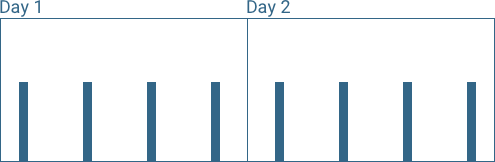
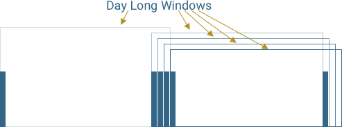

Build a REST API in Node
Peter Ajtai
Maintaining your API
- Try it out with:
- Swagger
- Protect it with:
- Rate Limits
Using Swagger
Swagger Setup
'use strict';
const swaggerJSDoc = require('swagger-jsdoc');
const swaggerUi = require('swagger-ui-express');
module.exports = server => {
const options = {
swaggerDefinition: {
openapi: "3.0.0",
info: {
title: 'Todo API', // Title (required)
version: '0.0.0', // Version (required)
},
servers: [
{
url: 'https://my.example.com/api/v1',
description: 'Live Server'
},
{
url: '/api/v1',
description: 'Local Server'
}
],
tags: [
{
name: "Tasks",
description: "Things to do."
}
]
},
apis: ['./models/**/*.model.js', './api/**/*.controller.js'],
};
// Initialize swagger-jsdoc -> returns validated swagger spec in json format
const swaggerSpec = swaggerJSDoc(options);
server.get('/api/api-docs.json', function(req, res) {
res.setHeader('Content-Type', 'application/json');
res.send(swaggerSpec);
});
server.use('/api/api-docs', swaggerUi.serve, swaggerUi.setup(swaggerSpec));
};
swagger-jsdoc creates our JSON description of the API.
swagger-ui-express creates the GUI to test the API.
Make sure to specify Version 3. There are subtle differences between 2 and 3.
Options object to initiate Swagger JSDoc
Servers objects allow one or more base urls.
Tags allow you to group api calls e.g. by nouns
We'll parse our controllers and models for JSDOC comments.
We'll create a JSON object using swagger-jsdoc.
We'll use this JSON object to create the Swagger UI:
http://localhost:3333/api/api-docs/
We'll serve the JSON object, so we can look at it:
http://localhost:3333/api/api-docs.json
Swagger JSDOC
'use strict';
const express = require('express');
module.exports = (app) => {
app.services.logger.debug('Tasks Controller Loaded');
const router = express.Router();
/**
* @swagger
* /tasks:
* get:
* tags:
* - Tasks
* description: Get collection of all tasks
* produces:
* responses:
* 200:
* content:
* application/json:
* description: tasks
* schema:
* type: array
* items:
* $ref: '#/components/schemas/Task'
*/
router.get('/', (req, res) => {
app.models.tasks
.find()
.then(docs => res.json(docs))
.catch(sendError(res));
});
/**
* @swagger
* /tasks:
* post:
* tags:
* - Tasks
* description: Add a task
* requestBody:
* required: true
* content:
* application/json:
* schema:
* $ref: '#/components/schemas/Task'
* responses:
* 201:
* content:
* application/json:
* description: tasks
* schema:
* $ref: '#/components/schemas/Task'
*/
router.post('/', (req, res) => {
const incoming = req.body;
const task = app.models.tasks(incoming);
task
.save(incoming)
.then(doc => res.status(201).json(doc))
.catch(sendError(res));
});
/**
* @swagger
* /tasks/{id}:
* delete:
* tags:
* - Tasks
* description: Delete a task by id
* parameters:
* - in: path
* name: id
* description: id of task to be deleted
* schema:
* type: string
* responses:
* 200:
* content:
* application/json:
* description: tasks
* schema:
* $ref: '#/components/schemas/Task'
*/
router.delete('/:id', (req, res) => {
console.log('about to delete', req.params.id);
app.models.tasks.findByIdAndRemove(req.params.id)
.then(doc => {
console.log('deleted', doc);
res.json(doc)
})
.catch(sendError(res));
});
return router;
};
function sendError(res) {
return error => {
res.status(500);
res.send(error);
}
}
Docs for Swagger are here. Can use JSON or YAML.
Mark swagger annotations with @swagger
Path is added to
Nest everything under the verb.
Parameters in body
Parameter in path
Parameters docs(query, path, header, body, or form):
https://swagger.io/docs/specification/2-0/describing-parameters/
$refs are reusable pointers.
Here they point to model definitions.
'use strict';
const mongoose = require('mongoose');
module.exports = (app) => {
/**
* @swagger
* definitions:
* Task:
* type: object
* properties:
* title:
* type: string
* done:
* type: boolean
*/
const tasksSchema = mongoose.Schema({
title: String,
done: {
default: false,
type: Boolean
}
});
return app.connection.model('Tasks', tasksSchema);
};
Let's look at a model to see how we annotate it with reusable definitions.
$ref: '#/definitions/Task'
There is some repetition here.
Examples
authorizations (api key or OAuth), schemes, namespaces
API Keys
const options = {
swaggerDefinition: {
info: {
title: 'Todo API', // Title (required)
version: '0.0.0', // Version (required)
},
},
apis: ['./boot/autoload.js', './models/**/*.model.js', './api/**/*.controller.js'], // Path to the API docs
};
autoload.js will have global configsProtect your API
4 requests a day

- What many npms allow
- Limit is completely reset at end of window
- Essentially 2X planned requests in 1 second
- Imagine this with a 500 request limit
4 requests a day
Rolling Windows
- Any given window can have only 4 requests
Implementation: Option 1
- Tokens represent credits for calls
- An API call removes a token
- Tokens replenished one at a time at rate limit
Advantage
- Tokens is single int
Disadvantage
- Refreshing tokens
- Imagine 1 million users
Implementation: Option 2
| Date of Request |
|---|
| 04:56 - 2018/09/12 |
| 09:13 - 2018/09/12 |
| 14:33 - 2018/09/12 |
| 01:07 - 2018/09/13 |
- Track each request
- When new request comes in
- delete logs older than window
- log request
- check if response allowed (
requests.length <= limit)
Advantage
- Accurate
Disadvantage
- More space required
Summary
- Use Swagger to help on board to your API
- Use rate limits to protect your API
- Do your due diligence with NPMs